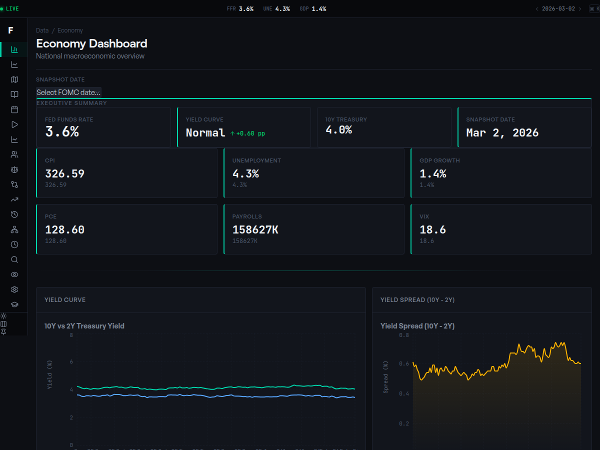
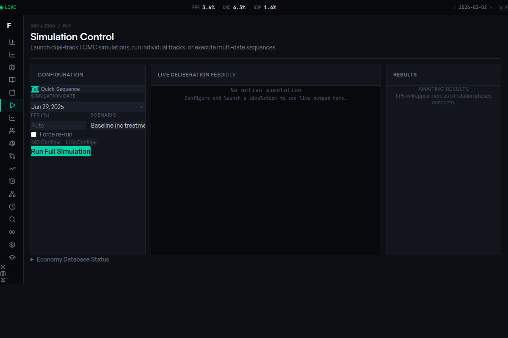
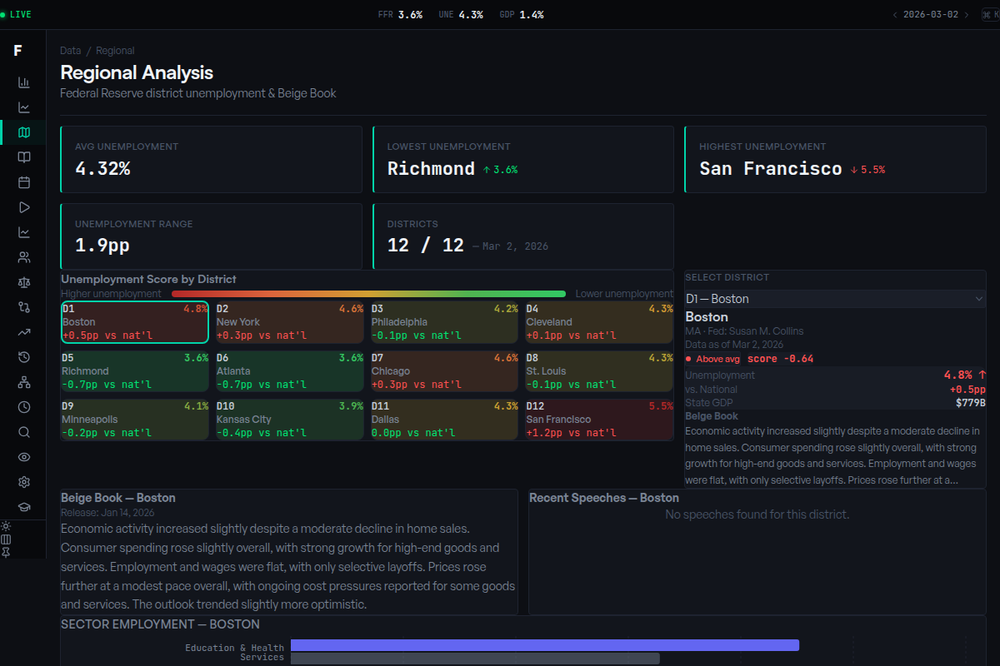
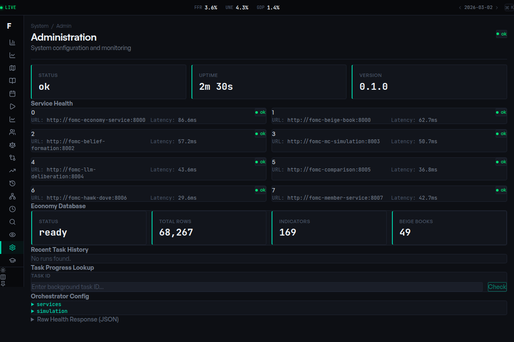

Making 80,000 Lines of Backend Code Legible to Humans
18,094 lines of TypeScript, 16 pages, 24 custom hooks, zero state management libraries — and why the frontend was harder than the backend.
The FOMC Simulation Platform runs ten microservices that together produce a simulated Federal Reserve meeting — agent-level rate recommendations, evolving beliefs, multi-round debate transcripts, probability distributions, and calibration scores. That is a lot of data. And none of it matters if nobody can see it.
The dashboard is 18,094 lines of React 19 and TypeScript. It talks to all ten backend services through dedicated API clients. It renders 20+ chart types, streams simulation progress in real time over SSE, and lets you export any chart as a timestamped PNG with one click. There is no Redux, no Zustand, no state management library. Just 24 custom hooks built on TanStack Query.
16 Pages, One Simulation
The dashboard is not a single analytics view. It is 16 distinct pages, each mapping to a different stage of the pipeline or a different analytical lens:
Core: Simulation (launch and configure runs), Results (MC distributions, LLM dot plots, belief evolution, convergence), Beliefs (prior-to-posterior evolution per agent), Hawk-Dove (speech classification with stance gauges).

Data: Economy (time-series indicators with AI commentary), Beige Book (12-district report with heatmap), Knowledge Graph (force-directed entity visualization), Explorer (semantic search across RAG knowledge base).
Analysis: Backtest (historical accuracy against actual decisions), Rate Paths (forward projections and fan charts), Regional (district-level deep dives), Deep Dive (individual run forensics).
Operations: Admin (service health, database population), Calendar (FOMC schedule with data markers), History (run comparison), Methodology (statistical documentation).

The Results page alone is 42KB of TypeScript — six chart components, three custom hooks, and two comparison API calls that run on-demand when you select a simulation run.
No State Management Library
TanStack Query replaces Redux for this dashboard. If your state is server-derived, you do not need a client-side store — you need a cache with smart invalidation.
// use-runs.ts
export function useRuns(dateFilter?: string) {
return useQuery({
queryKey: ["runs", dateFilter],
queryFn: () => fetchRuns(dateFilter),
staleTime: 30_000,
});
}
export function useRun(runId: string) {
return useQuery({
queryKey: ["run", runId],
queryFn: () => fetchRunDetail(runId),
enabled: !!runId,
});
}
The 24-hook architecture is more code than a single Redux slice, but each hook is independently testable, independently deployable, and immediately comprehensible to any developer who opens the file. staleTime keeps data fresh without refetching on every mount. enabled gates queries so they only fire when their dependencies are ready.
Real-Time SSE Streaming
Full simulations take 10-15 minutes end-to-end, with SSE streaming progress updates throughout. The dashboard streams progress in real time over Server-Sent Events:
function useSimulationSSE(url: string | null) {
const [events, setEvents] = useState([]);
const [connected, setConnected] = useState(false);
useEffect(() => {
if (!url) return;
const source = new EventSource(url);
source.addEventListener("progress", (e) => {
const data = JSON.parse(e.data);
startTransition(() => {
setEvents(prev => [...prev, data]);
});
});
source.addEventListener("completed", (e) => {
onCompleteRef.current?.(JSON.parse(e.data).result);
setConnected(false);
});
return () => source.close();
}, [url]);
}
React 19's startTransition is used for state changes so they do not interrupt higher-priority renders. The event stream carries structured data — round numbers, speaker names, percentage progress — so the UI renders a detailed timeline, not just a spinner.
SSE beats WebSockets for this use case. The stream is unidirectional (server-to-client only), SSE handles reconnection automatically, works through HTTP/2 without upgrade negotiation, and the browser API is three lines of code.
Per-Service API Clients with JWT Interceptors
Ten backend services means you need organized client infrastructure. A factory function bakes in JWT authentication:
function createClient(baseUrl: string): KyInstance {
return ky.create({
prefixUrl: baseUrl,
hooks: {
beforeRequest: [(req) => {
const token = getAuthToken();
if (token) req.headers.set("Authorization", `Bearer ${token}`);
}],
afterResponse: [async (_, __, res) => {
if (res.status === 401) clearSessionToken();
}],
},
});
}
export const orchestratorClient = createClient(ORCHESTRATOR_URL);
export const economyClient = createClient(ECONOMY_URL);
export const beigeBookClient = createClient(BEIGE_BOOK_URL);
// ... 5 more
Every outgoing request automatically attaches the JWT. Every 401 clears the session. When the economy service moved from port 8000 to 9000 and added a /v1 prefix, I changed one line.
Chart Stack: Recharts + Nivo + Sigma.js
No single charting library covers everything.
Recharts handles the statistical workhorses — distributions, scatter plots, time series. Its declarative React API composes well with TypeScript:
<Scatter data={data} shape="circle">
{data.map((point, idx) => (
<Cell key={idx}
fill={stanceColor(point.stanceChange)}
r={Math.max(5, point.confidence * 10)} />
))}
</Scatter>
Each dot in the FOMC dot plot encodes three dimensions: rate position on X, agent identity on Y, and confidence as radius. Reference lines layer in the current FFR, median forecast, confidence intervals, and historical actual rate.
Nivo fills the gaps — its ResponsiveHeatMap powers the Beige Book district sentiment view with diverging color scales.
Sigma.js + graphology handles the Knowledge Graph page — force-directed layout of the Neo4j entity graph with degree-scaled node sizing and interactive expansion.
One-Click PNG Export
Every chart is wrapped in a ChartExportWrapper:
export function ChartExportWrapper({ children, filename }) {
const ref = useRef(null);
return (
<div ref={ref} className="relative group">
<div className="absolute top-2 right-2 opacity-0
group-hover:opacity-100 transition-opacity">
<ExportButton targetRef={ref} filename={filename} />
</div>
{children}
</div>
);
}
The export uses lazy-loaded html-to-image with 2x pixel ratio for Retina quality. The background color is pulled from CSS custom properties so exports respect the current theme. Every filename includes an ISO timestamp.
This feature was added because I kept taking screenshots for documentation. Automating it saved hours — and it is directly useful for Substack articles and LinkedIn posts.
Lessons Learned
TanStack Query replaces Redux for 90% of dashboards. If your state is server-derived, you do not need a client-side store.
One chart library is never enough. Recharts handles 80% of the work. Accept that you will need something specialized for the other 20%.
Lazy-load export dependencies. html-to-image is 40KB gzipped. Nobody needs it until they click the button.
Type your entire API surface. When a backend field name changes, TypeScript catches it at compile time, not at runtime in production.
The dashboard is the part of the project that people actually interact with. All the Bayesian inference, Monte Carlo sampling, and LLM deliberation in the backend is invisible until the frontend makes it legible. That is the job.
Subscribe for next week's article — the honest backtesting results against 6 years of actual FOMC decisions, including where the model breaks.
— Vincent
Charts




